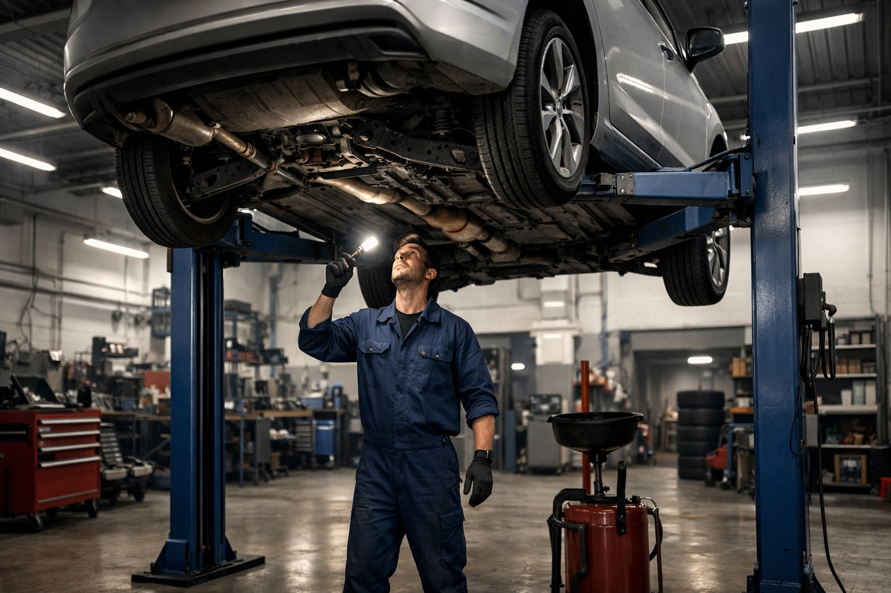
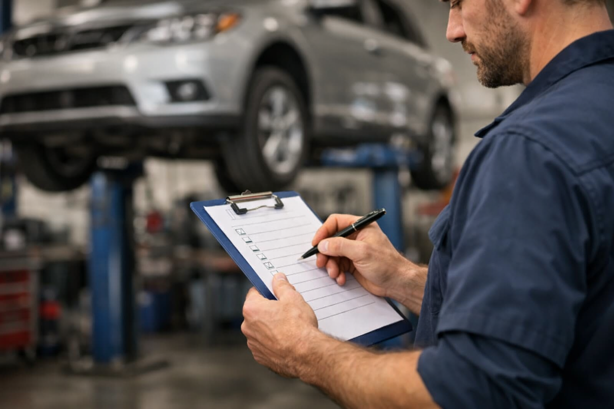

Préparation complète de votre véhicule avant le contrôle technique. Passez le CT du premier coup grâce à Ali-Ka, votre garage de confiance à Etterbeek depuis 22 ans.

Le contrôle technique approche et vous n'êtes pas sûr que votre voiture passera ? Pas de stress. Avec une bonne préparation, la grande majorité des véhicules passent du premier coup. En Belgique, le CT est obligatoire dès la quatrième année de mise en circulation, puis chaque année. Inutile de tenter votre chance au centre d'inspection les yeux fermés. Confiez votre véhicule à Ali-Ka, Avenue des Casernes 10 à Etterbeek. On fait le tour complet. On repère ce qui coince. On corrige avant le jour J.
Voici la réalité : chaque année, des centaines d'automobilistes d'Etterbeek, d'Ixelles, de Schaerbeek et de Woluwe repartent du centre avec une carte rouge. Un phare grillé. Des plaquettes trop fines. Un pneu lisse. Des détails évitables qui coûtent une seconde visite et des frais en plus. Comme le rappelle Autosécurité, la préparation en amont reste le meilleur moyen d'éviter une visite complémentaire. Chez Ali-Ka, c'est exactement ce qu'on fait : on anticipe pour que vous n'ayez plus qu'à vous présenter l'esprit tranquille.
Notre pré-contrôle reprend point par point ce que l'inspecteur va examiner. Rien n'est laissé au hasard. Consultez la liste officielle des vérifications sur le site d'Autocontrôle — voici ce que nous passons en revue :
Un problème détecté lors du pré-contrôle ? On vous explique clairement ce qu'il faut corriger et on vous remet un devis détaillé. Pas de surprise, pas d'intervention sans votre accord. Grâce à notre diagnostic électronique, on identifie rapidement les voyants allumés, les codes erreur et les défauts moteur qui provoqueraient un refus à l'inspection. La plupart des réparations sont réalisées le jour même dans notre atelier d'Etterbeek — et si votre vidange est due, on la fait dans la foulée pour une remise à niveau complète. Résultat : vous vous présentez au centre serein, avec un véhicule prêt.
Que vous habitiez le quartier des Casernes à Etterbeek, les environs de la place Flagey à Ixelles, le quartier Diamant à Schaerbeek ou les avenues résidentielles de Woluwe-Saint-Lambert — Ali-Ka est votre garage de proximité pour aborder le contrôle technique en toute confiance. Appelez le 02 647 47 01 et on planifie votre pré-contrôle ensemble.
Le premier contrôle technique a lieu 4 ans après la mise en circulation du véhicule. Ensuite, il est obligatoire chaque année. Les véhicules utilitaires et les oldtimers peuvent avoir des échéances spécifiques. Chez Ali-Ka à Etterbeek, nous vous rappelons l'échéance et préparons votre voiture en amont.
L'inspection porte sur les freins, l'éclairage, les pneus, la direction, la suspension, l'échappement, les émissions, la carrosserie et le châssis. Chez Ali-Ka, nous passons en revue chacun de ces points lors de notre pré-contrôle pour éviter toute mauvaise surprise.
Le tarif du pré-contrôle dépend de l'état général de votre véhicule. La vérification visuelle est proposée à un prix compétitif. Les réparations éventuelles sont chiffrées séparément avec votre accord préalable. Appelez le 02 647 47 01 pour un devis gratuit.
En cas de carte rouge, vous disposez d'un délai de 15 jours ouvrables pour effectuer les réparations et repasser l'inspection. Chez Ali-Ka à Etterbeek, nous réalisons les corrections rapidement pour que vous puissiez repasser le CT dans les meilleurs délais et sans stress.
Oui, tout voyant d'alerte allumé sur le tableau de bord entraîne un refus automatique au contrôle technique. C'est l'une des causes de refus les plus fréquentes. Passez chez Ali-Ka à Etterbeek pour un diagnostic moteur avant votre rendez-vous au centre d'inspection.